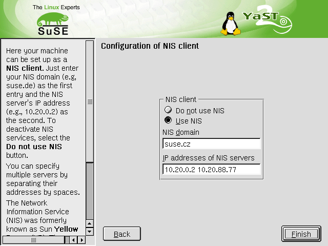
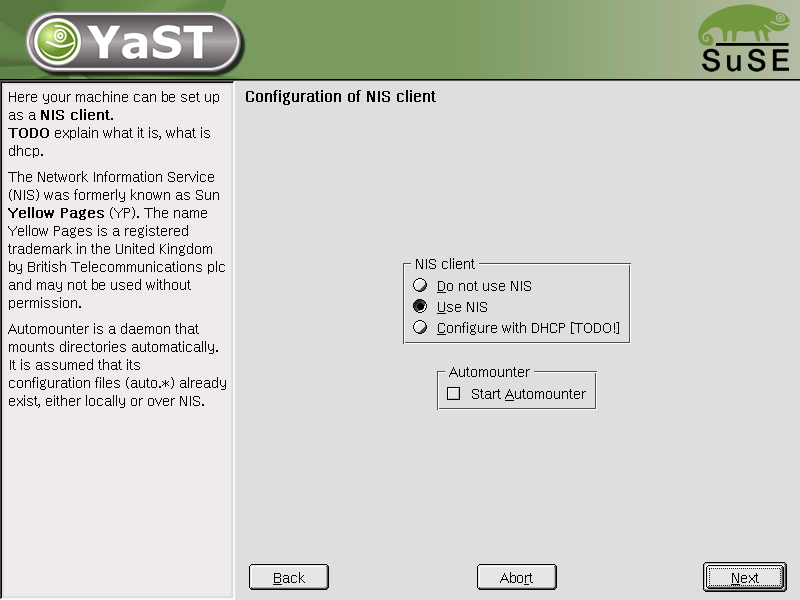
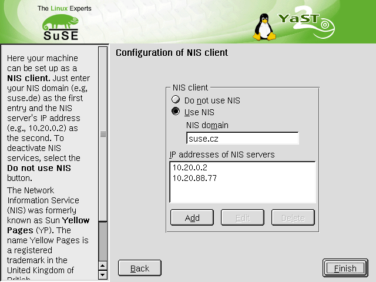

The NIS client config module manages relevant variables in /erc/rc.config and starts and stops the necessary init scripts: ypbind and portmap. Runs SuSEconfig module ypclient.
The help text and the input box label mention multiple servers. See bug #9559.

An older version, not mentioning multiple servers:

Another variant: Multiple servers in a list box. Should they be in a separate dialog? (PushButton "More servers...")
